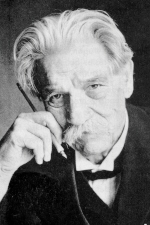

Швейцер (Schweitzer) Альберт
[14.01.1875, Кайзерсберг, Эльзас,-04.09.1965, Ламбарене (Габон)]
 Швейцер (Schweitzer) Альберт - немецко-французский мыслитель, богослов, врач, музыковед и органист; всемирно известен антивоенными выступлениями. Образование получил в университетах Страсбурга, Берлина, Парижа. С 1899 доктор философии (диссертация "Философия религии Канта", 1899), с 1900 доктор теологии, с 1913 доктор медицины.
В начале 20 в. завоевал известность как концертирующий органист. Основное значение Швейцер как музыковеда связано с его работой о И.С. Бахе. Оказал влияние на современный стиль исполнения музыки Баха, способствовал возрождению интереса к его творчеству.
В 1913 вместе с женой - медицинской сестрой Элен Бреслау на собственные средства основал больницу в Ламбарене, которая стала для Швейцер главным делом жизни и трибуной проповеди его идей. В 1928 Швейцер присуждена Франкфуртская премия Гёте, в 1952 - Нобелевская премия мира, на средства от которой Швейцер построил лепрозорий в Ламбарене.
Исходный принцип мировоззрения Швейцер - факт жизни (противопоставляемый у Швейцер факту мысли как производному). Возражая декартовскому "я мыслю, следовательно, существую", Швейцер предлагает формулу: "я - жизнь, которая хочет жить среди жизни". Отсюда Швейцер выводил основной этический принцип "благоговения перед жизнью", требующий сохранения и совершенствования жизни. Поэтому нравственность, по Швейцер, - не только закон, но и коренное условие существования и развития жизни. "Благоговение перед жизнью" должно, по мысли Швейцер, стать основой этического обновления человечества, выработки норм универсальной космической этики.
Отстаивая идею свободного и нравственного индивида, Швейцер выступал против господства "всеобщего" над "конкретно-личным". В экзистенциальном духе он противополагал два жизненных принципа: волю как выражение свободного и нравственного существа человека - знанию (пониманию) как такому отношению к жизни, в основе которого лежит стремление к подчинению внешней необходимости. По мысли Швейцера, "понимающее" отношение к миру приводит к скептицизму, выражающему "духовное банкротство цивилизации". Швейцер противопоставлял культуру цивилизации, критиковал "техническую эру" и "внешний прогресс". Согласно Швейцеру, этика призвана органично сливаться с культурой, что должно обеспечить прогресс человечества, духовное совершенствование индивида. Критерием развития культуры он считал уровень гуманизма, достигнутый конкретным обществом. Швейцер ставил своей задачей создание философски обоснованного и практически применимого оптимистического мировоззрения, способного утвердить человеческую личность в неблагоприятных условиях и восстановить её творческую активность. С этой гуманистические позиции Швейцер критиковал нравственное состояние современного буржуазного общества, переживающего глубокий духовный кризис. В 1969 Швейцеру сооружены памятники в Веймаре и Гюнсбахе; мемориальный музей в Кайзерсберге.
Сочинения:
Die psychiatrische Beurteilung Jesu, T?bingen, 1913; Kulturphilosophie, Bd 1-2, Munchen., 1923;
Das Christentum und die Weltreligionen, M?nch., 1924;
Le probl?me de l’?thique dans revolution de la pens?e humaine. P., 1952;
Friede oder Atornkrieg, Bern, 1958;
Die Lehre der Ehrfurcht vor dem Leben, 2 Aufl., B., 1963; в рус. пер. - И. С. Бах, М., 1964;
Культура и этика, М., 1973;
Письма из Ламбарене, Л., 1978.
Литература:
Друскин М., А. Швейцер и вопросы баховедения, "Советская музыка", 1960, № 3;
Левада Ю. А., А. Швейцер - мыслитель и человек, "Вопросы философии", 1965, № 12;
Геттинг Г., Встречи с Альбертом Швейцером, пер. с нем., М., 1967;
Альберт Швейцер - великий гуманист XX в., М., 1970;
Петрицкий В. А., Этическое учение А. Швейцера, Л., 1971;
Носик Б. М., Швейцер, М.,1971;
Langfeldt G., A. Schweitzer. A study of his philosophy of life, N. Y., 1960;
B?hr Н. W. [Hrsg.], A. Schweitzer. Sein Denken und sein Weg, T?bingen, 1962;
M?ller R., 50 Jahre Albert Schweitzer - Spital in Lambarene, "Munchener medizinische Wochenschrift", 1963. Bd 105, №51, s.2521/2530; Clark H., The philosophy of A. Schweitzer, L., 1964;
Marshall G. N., An understanding of A. Schweitzer, [L., 1966].
|